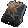
宿敌铭文
Glyph of Nemeses
scnm从 Mod 原始素材转换的透明图标。炼狱地图未收录中文名称的条目暂显示英文原名。

Glyph of Nemeses
scnm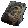
Glyph of Adversaries
scas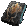
Glyph of Corruption
sccnTerror of Opulence
troo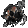
Terror of Ethereal
troeTerror of Resplendence
tror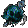
Terror of Absolute
troa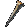
Cartographer's Chisel
ccsl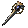
Cartographer's Chisel of Avarice
ccsa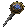
Cartographer's Chisel of Procurement
ccprHatred Orb of Equipment
hor1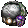
Hatred Orb of Accessories
hor2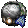
Hatred Orb of Essences
hor3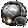
Hatred Orb of Fate Cards
hor4Hatred Orb of Runes
hor5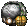
Hatred Orb of Currency
hor6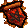
Infernal Lava Map
tm1iInfernal Throne Map
tm2i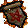
Infernal Graveyard Map
tm3i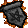
Infernal Pandemonium Map
tm4iInfernal Desert Map
tm5i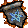
Infernal Frozen Forest Map
tm6i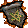
Infernal Library Map
tm7i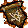
Infernal Ruined Cistern Map
tm8i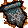
Infernal Ashes Map
tm9i
Infernal Kiln
hffd图标以原始像素尺寸保存和展示。来源和物品代码见 素材清单 与 README。